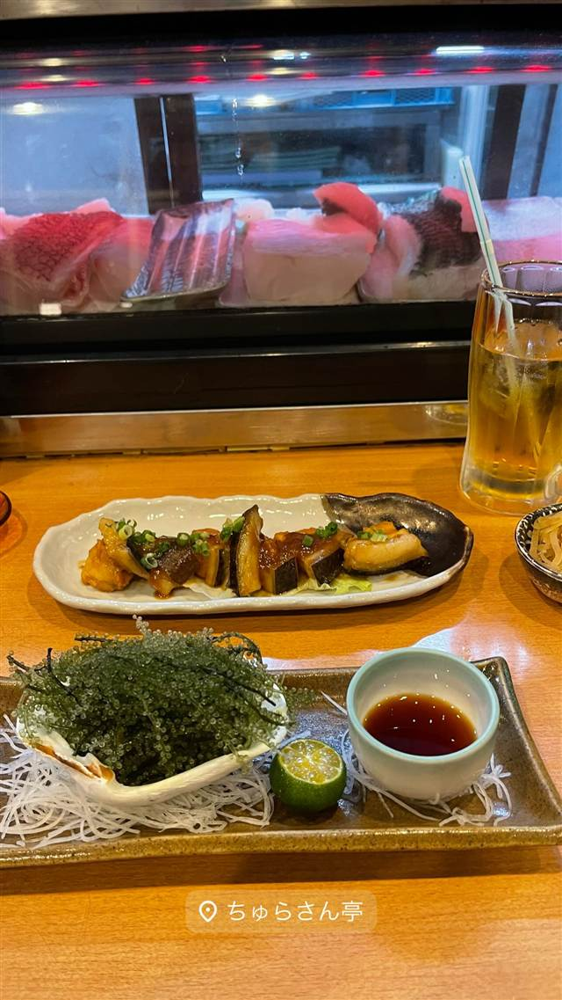
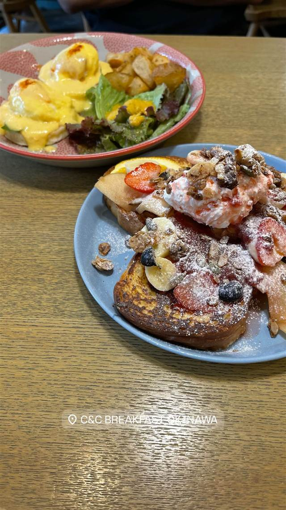
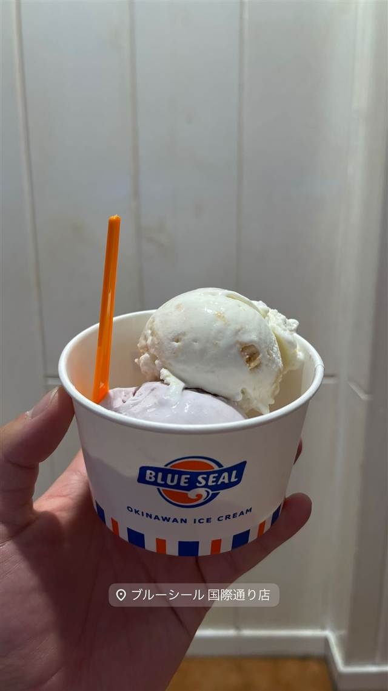
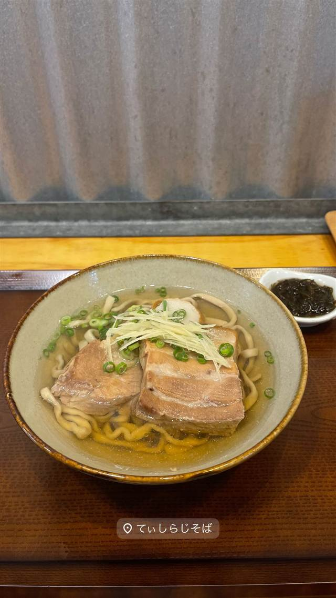
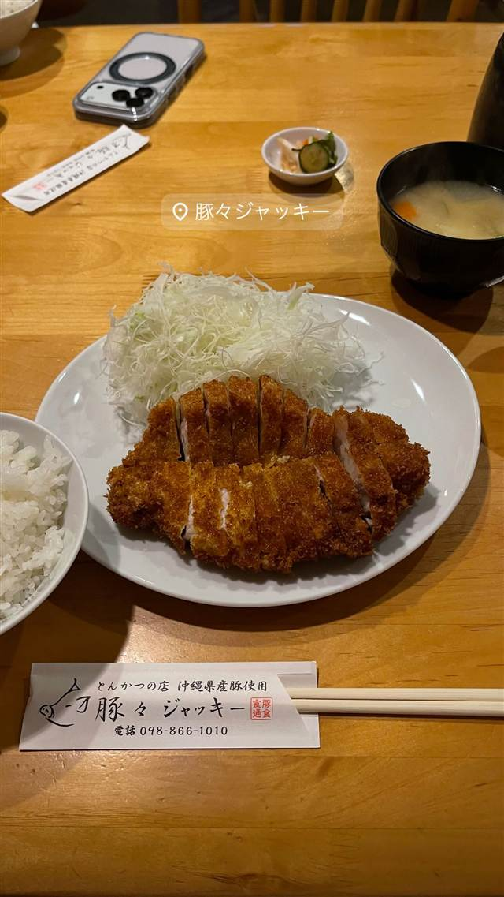
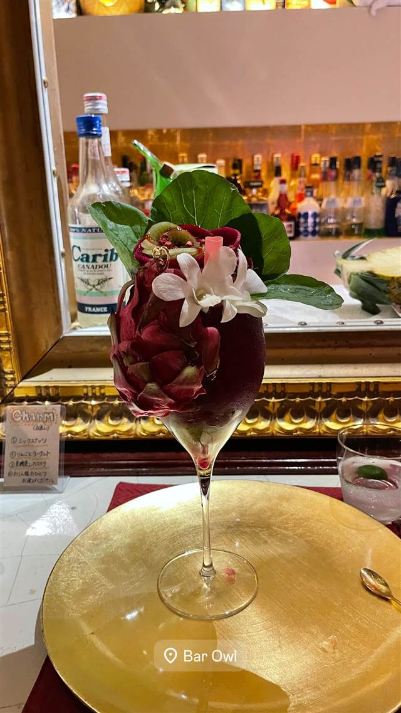

沖縄近海魚 琉球料理 ちゅらさん亭
座席の魚説明付き、沖縄近海の地魚と名物海ぶどう丼
ちゅらさん亭
旭橋駅近くにある沖縄料理店で、沖縄近海の地魚と琉球家庭料理が楽しめる。名物の海ぶどう丼をはじめ、泡盛・古酒の品揃えも豊富で地元客からも支持されている。
TRIVIA
豆知識
- 沖縄近海で獲れる色鮮やかな魚は見た目に反して美味しいものが多く、座席に魚の説明が掲示されている
REVIEWS
世間の評判
3.48食べログ
新鮮な地魚と沖縄料理の充実
- グルクン唐揚げなど新鮮な地魚料理の美味しさを評価する声が多い
- ラフテーや海ぶどうなど沖縄料理の充実ぶりを高く評価する声が多い
- お酒の価格が高めでメニューも多すぎて選ぶのに悩むという声もある
食べログ 口コミ403件
| 看板 | 海ぶどう丼、沖縄近海の地魚料理、琉球家庭料理・チャンプルー |
|---|---|
| こだわり | 座席に掲示された「お魚情報」で沖縄近海の見慣れない色鮮やかな魚を選べるスタイル。海ぶどうと卵をとろろで和えた「海ぶどう丼」が名物。 |
| どこから | 遠方 |
| 予算 | 夜 ¥6,000～¥7,999 |
| 定休日 | 水曜 |
| 場所 | 旭橋駅 沖縄県那覇市東町 |
| メモ | ゆいレール旭橋駅から徒歩3分。泡盛・古酒の品揃えも豊富。 |
食べたもの：海ぶどうと沖縄料理
NEARBY
近い店・同じ系統の店
-
 ハワイ 牧志駅
ハワイアンフルーツカフェ -the Sea-
久米島の海洋深層水を極薄の氷に削り海を食べるかき氷に仕立てる
昼 ¥1,000～¥1,999 夜 ¥1,000～¥1,999
ハワイ 牧志駅
ハワイアンフルーツカフェ -the Sea-
久米島の海洋深層水を極薄の氷に削り海を食べるかき氷に仕立てる
昼 ¥1,000～¥1,999 夜 ¥1,000～¥1,999
-

ブランチ 牧志駅 C&C BREAKFAST OKINAWA 牧志公設市場の食材を使うエッグベネディクトと沖縄ハワイ北欧融合の空間 昼 ¥1,000～¥1,999 -

アイス・ジェラート 美栄橋駅 ブルーシール 国際通り店 米軍統治下の乳製品会社発祥、紅芋やサトウキビ味のアイス 昼 ～¥999 夜 ～¥999 -

沖縄そば 首里駅 てぃしらじそば 趣味が高じて脱サラ店主が始めた、売り切れ御免の自家製麺沖縄そば 昼 ¥1,000～¥1,999 夜 ¥1,000～¥1,999 -

とんかつ 旭橋駅 豚々ジャッキー あぐー豚とやんばる島豚だけを使うとんかつ、引き戸の奥の隠れ家 昼 ¥1,000～¥1,999 夜 ¥3,000～¥3,999 -

カクテル・ウイスキー 県庁前駅 BAR Owl（バーアウル） Bar百名店に選ばれた沖縄産フルーツのカラフルなカクテル 夜 ¥5,000～¥5,999